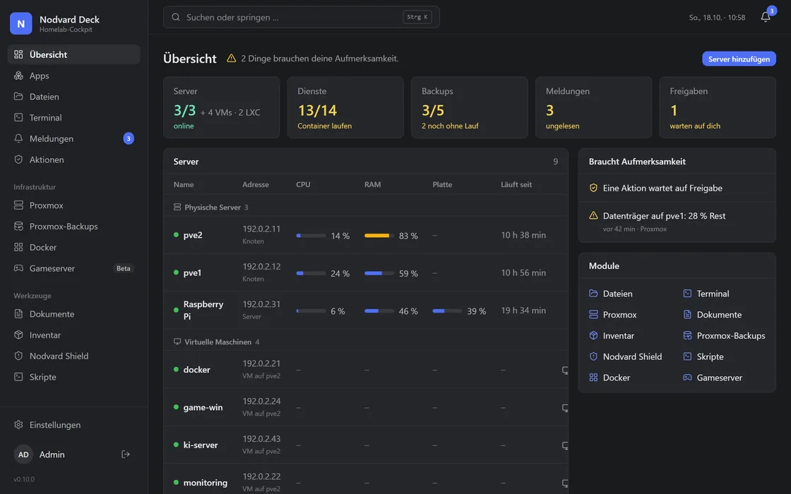
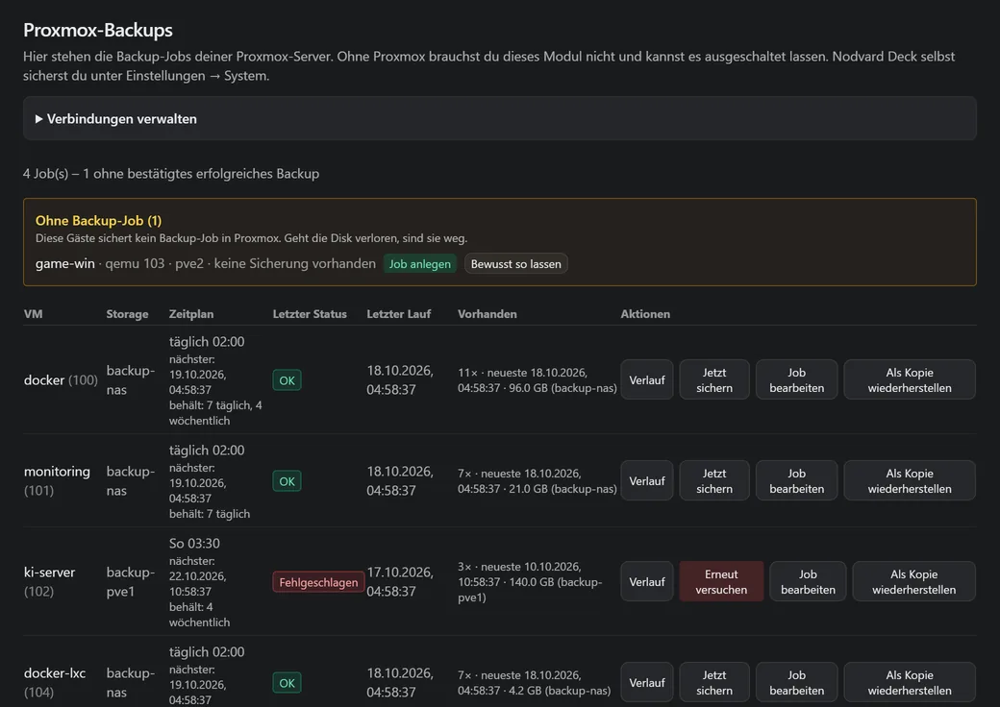

Proxmox und Docker in einem Dashboard
Auf Proxmox laufen deine VMs und LXC, und darin läuft oft Docker. Nodvard Deck zeigt dir beides zusammen, vom Knoten über den Gast bis zum Container, mit Auslastung, Backups und Updates.


Proxmox
Knoten, VMs und LXC startest und stoppst du in Deck, die Konsole läuft im Browser. Snapshots, Hardware, Speicher und Updates siehst du je Gast, dazu Festplatten-Zustand, ZFS und Temperatur der Knoten. Proxmox verbindest du in einem Schritt.
Mehr zu Proxmox
Docker in deinen Gästen
Läuft Docker in einer VM oder einem LXC, verbindet sich Deck per SSH und zeigt dir Container und Compose-Stacks dieses Gasts. Und wenn ein Update schiefgeht, kommst du zurück zur alten Version. Stacks bearbeitest du als Text oder im Formular.
Mehr zu Docker
Proxmox-Backups im Blick
Deck zeigt alle Backup-Jobs mit letztem Lauf und vorhandenen Sicherungen. Fehlt für einen Gast ein Job oder ist ein Lauf fehlgeschlagen, steht das oben. Wiederherstellen geht als Kopie, das Original bleibt, wie es ist.
Mehr zu BackupsAuch ohne Proxmox
Proxmox brauchst du nicht. Hast du nur einen Raspberry Pi, ein NAS oder ein paar Docker-Hosts, zeigt Deck eben die. Proxmox kannst du auch später noch dazunehmen.
Selbst ausprobieren
Deck läuft in Docker, auf einem Raspberry Pi genauso wie auf einer VM in deinem Proxmox.